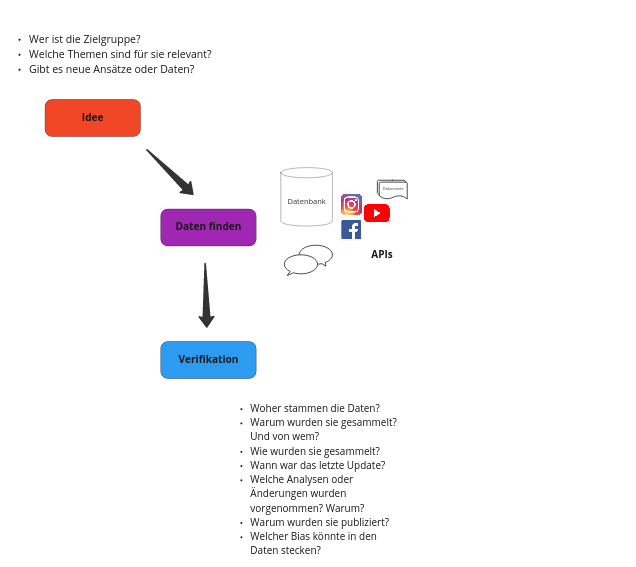
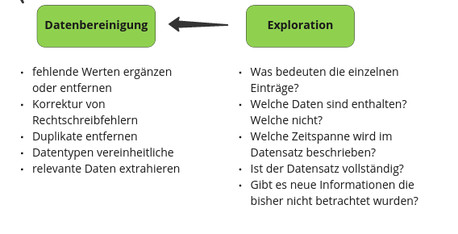

Explorative Datenanalyse#
Ziele#
Kennenlernen der unterschiedlichen Schritte bei der Datenanalyse
kritisches Hinterfragen der Datenqualität
unterschiedliche Datenformate (csv, json, excel, txt) einlesen und speichern
strukturierte Daten mit Pandas bearbeiten und analysieren
Erstellung einfacher Visualisierungen
Verwendung weiterer Python Packages
Was sind Daten?#
Strukturierte Daten#
Strukturierte Daten sind gut organisiert und so formattiert, dass es einfach ist sie zu durchsuchen, sie maschinell zu lesen oder zu verarbeiten. Das einfachste Beispiel ist eine Tabelle in der jede Spalte eine Kategorie festlegt.
Unstrukturierte Daten#
Im Gegensatz dazu sind unstrukturierte Daten nicht in einem bestimmten Format oder einer festgelegten Struktur verfügbar. Dazu zählen Texte, Bilder, Social Media Feeds, aber auch Audio Files, etc.
Semi-Strukturierte Daten#
Semi-strukturierte Daten bilden eine Mischform. Beispielsweise eine Tabelle mit E-Mail Daten, in der Empfänger, Betreff, Datum und Absender strukturierte Informationen enthalten, der eigentliche Text jedoch unstrukturiert ist.
Unterschiedliche Ebenen an Information in Daten#

Quelle: Hot Butter Studio Brandon Rossen and Karyn Lurie (2012).
Datenpipeline#

Explorative Datenanalyse: Weltweite Naturkatastrophen#
Idee, Daten finden & Verifikation#

Aggregated figures for Natural Disasters in EM-DAT#
Link: https://data.humdata.org/dataset/emdat-country-profiles
In 1988, the Centre for Research on the Epidemiology of Disasters (CRED) launched the Emergency Events Database (EM-DAT). EM-DAT was created with the initial support of the World Health Organisation (WHO) and the Belgian Government.
The main objective of the database is to serve the purposes of humanitarian action at national and international levels. The initiative aims to rationalise decision making for disaster preparedness, as well as provide an objective base for vulnerability assessment and priority setting.
EM-DAT contains essential core data on the occurrence and effects of over 22,000 mass disasters in the world from 1900 to the present day. The database is compiled from various sources, including UN agencies, non-governmental organisations, insurance companies, research institutes and press agencies.
import pandas as pd
data = pd.read_excel('../../data/emdat.xlsx', engine="openpyxl")
data
---------------------------------------------------------------------------
NameError Traceback (most recent call last)
Cell In[1], line 1
----> 1 data
NameError: name 'data' is not defined
Datenexploration und -bereinigung#

Überblick über die Daten#
# head() gibt die ersten 5 Zeilen aus
data.head()
| Year | Country | ISO | Disaster Group | Disaster Subroup | Disaster Type | Disaster Subtype | Total Events | Total Affected | Total Deaths | Total Damage (USD, original) | Total Damage (USD, adjusted) | CPI | |
|---|---|---|---|---|---|---|---|---|---|---|---|---|---|
| 0 | #date +occurred | #country +name | #country +code | #cause +group | #cause +subgroup | #cause +type | #cause +subtype | #frequency | #affected +ind | #affected +ind +killed | NaN | #value +usd | NaN |
| 1 | 1900 | Cabo Verde | CPV | Natural | Climatological | Drought | Drought | 1 | NaN | 11000 | NaN | NaN | 3.077091 |
| 2 | 1900 | India | IND | Natural | Climatological | Drought | Drought | 1 | NaN | 1250000 | NaN | NaN | 3.077091 |
| 3 | 1900 | Jamaica | JAM | Natural | Hydrological | Flood | NaN | 1 | NaN | 300 | NaN | NaN | 3.077091 |
| 4 | 1900 | Japan | JPN | Natural | Geophysical | Volcanic activity | Ash fall | 1 | NaN | 30 | NaN | NaN | 3.077091 |
Wie groß ist der Datensatz? Wie viele Zeilen und wie viele Spalten sind vorhanden?
data.shape
(10343, 13)
print(f'Anzahl an Zeilen: {data.shape[0]}')
print(f'Anzahl an Spalten: {data.shape[1]}')
Anzahl an Zeilen: 10343
Anzahl an Spalten: 13
Die Spaltennamen
print(data.columns)
Index(['Year', 'Country', 'ISO', 'Disaster Group', 'Disaster Subroup',
'Disaster Type', 'Disaster Subtype', 'Total Events', 'Total Affected',
'Total Deaths', 'Total Damage (USD, original)',
'Total Damage (USD, adjusted)', 'CPI'],
dtype='object')
info() für mehr Infos über die Spalten
print(data.info())
<class 'pandas.core.frame.DataFrame'>
RangeIndex: 10343 entries, 0 to 10342
Data columns (total 13 columns):
# Column Non-Null Count Dtype
--- ------ -------------- -----
0 Year 10343 non-null object
1 Country 10343 non-null object
2 ISO 10343 non-null object
3 Disaster Group 10343 non-null object
4 Disaster Subroup 10343 non-null object
5 Disaster Type 10343 non-null object
6 Disaster Subtype 8226 non-null object
7 Total Events 10343 non-null object
8 Total Affected 7507 non-null object
9 Total Deaths 7318 non-null object
10 Total Damage (USD, original) 3796 non-null float64
11 Total Damage (USD, adjusted) 3767 non-null object
12 CPI 10149 non-null float64
dtypes: float64(2), object(11)
memory usage: 1.0+ MB
None
describe() zeigt die grundlegenden statistischen Eigenschaften von Spalten mit numerischem Datentyp, also int und float.
Die Methode berechnet:
die Anzahl an fehlenden Werten
Durchschnitt
Standardabweichung
Zahlenrange
Media
0.25 und 0.75 Quartile
data.describe()
| Total Damage (USD, original) | CPI | |
|---|---|---|
| count | 3.796000e+03 | 10149.000000 |
| mean | 1.058358e+09 | 58.812266 |
| std | 6.396224e+09 | 27.308606 |
| min | 2.000000e+03 | 3.077091 |
| 25% | 9.988750e+06 | 40.450409 |
| 50% | 6.700000e+07 | 63.549547 |
| 75% | 4.000000e+08 | 80.472285 |
| max | 2.100000e+11 | 100.000000 |
.unique() zeigt die unterschiedlichen Werte einer Spalte an
data['Year'].unique()
array(['#date +occurred', 1900, 1901, 1902, 1903, 1904, 1905, 1906, 1907,
1908, 1909, 1910, 1911, 1912, 1913, 1914, 1915, 1916, 1917, 1918,
1919, 1920, 1921, 1922, 1923, 1924, 1925, 1926, 1927, 1928, 1929,
1930, 1931, 1932, 1933, 1934, 1935, 1936, 1937, 1938, 1939, 1940,
1941, 1942, 1943, 1944, 1945, 1946, 1947, 1948, 1949, 1950, 1951,
1952, 1953, 1954, 1955, 1956, 1957, 1958, 1959, 1960, 1961, 1962,
1963, 1964, 1965, 1966, 1967, 1968, 1969, 1970, 1971, 1972, 1973,
1974, 1975, 1976, 1977, 1978, 1979, 1980, 1981, 1982, 1983, 1984,
1985, 1986, 1987, 1988, 1989, 1990, 1991, 1992, 1993, 1994, 1995,
1996, 1997, 1998, 1999, 2000, 2001, 2002, 2003, 2004, 2005, 2006,
2007, 2008, 2009, 2010, 2011, 2012, 2013, 2014, 2015, 2016, 2017,
2018, 2019, 2020, 2021, 2022], dtype=object)
Data Cleaning Teil I: erste Zeile im DataFrame entfernen#
data.index
RangeIndex(start=0, stop=10343, step=1)
data = data.drop(index=0)
data
| Year | Country | ISO | Disaster Group | Disaster Subroup | Disaster Type | Disaster Subtype | Total Events | Total Affected | Total Deaths | Total Damage (USD, original) | Total Damage (USD, adjusted) | CPI | |
|---|---|---|---|---|---|---|---|---|---|---|---|---|---|
| 1 | 1900 | Cabo Verde | CPV | Natural | Climatological | Drought | Drought | 1 | NaN | 11000 | NaN | NaN | 3.077091 |
| 2 | 1900 | India | IND | Natural | Climatological | Drought | Drought | 1 | NaN | 1250000 | NaN | NaN | 3.077091 |
| 3 | 1900 | Jamaica | JAM | Natural | Hydrological | Flood | NaN | 1 | NaN | 300 | NaN | NaN | 3.077091 |
| 4 | 1900 | Japan | JPN | Natural | Geophysical | Volcanic activity | Ash fall | 1 | NaN | 30 | NaN | NaN | 3.077091 |
| 5 | 1900 | Turkey | TUR | Natural | Geophysical | Earthquake | Ground movement | 1 | NaN | 140 | NaN | NaN | 3.077091 |
| ... | ... | ... | ... | ... | ... | ... | ... | ... | ... | ... | ... | ... | ... |
| 10338 | 2022 | Yemen | YEM | Natural | Hydrological | Flood | Flash flood | 1 | 3400 | 13 | NaN | NaN | NaN |
| 10339 | 2022 | South Africa | ZAF | Natural | Hydrological | Flood | NaN | 7 | 143119 | 562 | 3.164000e+09 | NaN | NaN |
| 10340 | 2022 | Zambia | ZMB | Natural | Hydrological | Flood | NaN | 1 | 15000 | 3 | NaN | NaN | NaN |
| 10341 | 2022 | Zimbabwe | ZWE | Natural | Hydrological | Flood | NaN | 1 | NaN | NaN | NaN | NaN | NaN |
| 10342 | 2022 | Zimbabwe | ZWE | Natural | Meteorological | Storm | Tropical cyclone | 1 | 3000 | NaN | NaN | NaN | NaN |
10342 rows × 13 columns
Datentypen abfragen und anpassen#
data.info()
<class 'pandas.core.frame.DataFrame'>
RangeIndex: 10342 entries, 1 to 10342
Data columns (total 13 columns):
# Column Non-Null Count Dtype
--- ------ -------------- -----
0 Year 10342 non-null object
1 Country 10342 non-null object
2 ISO 10342 non-null object
3 Disaster Group 10342 non-null object
4 Disaster Subroup 10342 non-null object
5 Disaster Type 10342 non-null object
6 Disaster Subtype 8225 non-null object
7 Total Events 10342 non-null object
8 Total Affected 7506 non-null object
9 Total Deaths 7317 non-null object
10 Total Damage (USD, original) 3796 non-null float64
11 Total Damage (USD, adjusted) 3766 non-null object
12 CPI 10149 non-null float64
dtypes: float64(2), object(11)
memory usage: 1.0+ MB
# Datentyp Abfrage mit dem Attribut
data['Year'].dtype
dtype('O')
Data Cleaning Teil II: Datentypen umwandeln#
# Umwandlung des Datentyp
data["Year"] = pd.to_numeric(data["Year"])
data['Year'].dtype
dtype('int64')
# Auf alle integer und float Spalten anwenden
cols = ['Total Events', 'Total Affected', 'Total Deaths', 'Total Damage (USD, adjusted)']
for col in cols:
data[col] = pd.to_numeric(data[col])
data.info()
<class 'pandas.core.frame.DataFrame'>
RangeIndex: 10342 entries, 1 to 10342
Data columns (total 13 columns):
# Column Non-Null Count Dtype
--- ------ -------------- -----
0 Year 10342 non-null int64
1 Country 10342 non-null object
2 ISO 10342 non-null object
3 Disaster Group 10342 non-null object
4 Disaster Subroup 10342 non-null object
5 Disaster Type 10342 non-null object
6 Disaster Subtype 8225 non-null object
7 Total Events 10342 non-null int64
8 Total Affected 7506 non-null float64
9 Total Deaths 7317 non-null float64
10 Total Damage (USD, original) 3796 non-null float64
11 Total Damage (USD, adjusted) 3766 non-null float64
12 CPI 10149 non-null float64
dtypes: float64(5), int64(2), object(6)
memory usage: 1.0+ MB
Überblick über die numerischen Daten#
data.describe()
| Year | Total Events | Total Affected | Total Deaths | Total Damage (USD, original) | Total Damage (USD, adjusted) | CPI | |
|---|---|---|---|---|---|---|---|
| count | 10342.000000 | 10342.000000 | 7.506000e+03 | 7.317000e+03 | 3.796000e+03 | 3.766000e+03 | 10149.000000 |
| mean | 1995.349836 | 1.444885 | 1.123573e+06 | 3.122315e+03 | 1.058358e+09 | 1.591526e+09 | 58.812266 |
| std | 21.975130 | 1.236398 | 9.804163e+06 | 7.284039e+04 | 6.396224e+09 | 8.361409e+09 | 27.308606 |
| min | 1900.000000 | 1.000000 | 1.000000e+00 | 1.000000e+00 | 2.000000e+03 | 2.287000e+03 | 3.077091 |
| 25% | 1986.000000 | 1.000000 | 1.200000e+03 | 6.000000e+00 | 9.988750e+06 | 1.828097e+07 | 40.450409 |
| 50% | 2000.000000 | 1.000000 | 1.141400e+04 | 2.300000e+01 | 6.700000e+07 | 1.360379e+08 | 63.549547 |
| 75% | 2011.000000 | 1.000000 | 1.169720e+05 | 9.100000e+01 | 4.000000e+08 | 7.188042e+08 | 80.472285 |
| max | 2022.000000 | 20.000000 | 3.300000e+08 | 3.700000e+06 | 2.100000e+11 | 2.529734e+11 | 100.000000 |
Überblick über die Objekt Daten#
# Unterschiedliche Länder
countries = data['Country'].unique()
print(countries)
['Cabo Verde' 'India' 'Jamaica' 'Japan' 'Turkey'
'United States of America (the)' 'Azerbaijan' 'China' 'Guatemala'
'Myanmar' 'Martinique' 'Soviet Union' 'Saint Vincent and the Grenadines'
'Canada' 'Comoros (the)' 'Iran (Islamic Republic of)' 'Israel'
'Niger (the)' 'Bangladesh' 'Greece' 'Taiwan (Province of China)'
'Albania' 'Italy' 'Philippines (the)' 'Belgium' 'Chile' 'Colombia'
'Hong Kong' 'Romania' 'France' 'Haiti' 'Morocco' 'Pakistan' 'Portugal'
'Burkina Faso' 'Costa Rica' 'Algeria' 'Gambia (the)' 'Guinea-Bissau'
'Mali' 'Mauritania' 'Senegal' 'Chad' 'Kazakhstan' 'Mexico' 'Tajikistan'
'Indonesia' 'Peru' 'Tokelau' 'Puerto Rico' 'Anguilla' 'Argentina'
'Germany Fed Rep' 'Ecuador' 'Bahamas (the)' 'Cuba' 'Egypt' 'Jordan'
'Bulgaria' 'Guadeloupe' 'Saint Kitts and Nevis' 'Montserrat' 'Poland'
'New Zealand' 'Dominica' 'Dominican Republic (the)' 'Nicaragua' 'Armenia'
'Belize' 'Fiji' 'Honduras' 'Solomon Islands' 'Trinidad and Tobago'
'El Salvador' 'Korea (the Republic of)' 'Norway' 'Papua New Guinea'
'Australia' 'Ghana' 'New Caledonia' 'Vanuatu' 'Spain' 'Yemen Arab Rep'
'Cook Islands (the)' 'Yugoslavia' 'Libya' 'Azores Islands' 'Tonga'
'Bermuda' 'Brazil' 'Réunion' 'Antigua and Barbuda'
'Venezuela (Bolivarian Republic of)' 'Switzerland' 'Austria'
'United Kingdom of Great Britain and Northern Ireland (the)'
'South Africa' 'Cyprus' 'Netherlands (the)' 'Viet Nam' 'Afghanistan'
'Netherlands Antilles' 'Iraq' 'Nepal' 'Barbados' 'Lebanon' 'Mozambique'
'Sri Lanka' 'Mongolia' 'Canary Is' 'Tunisia' 'French Polynesia' 'Niue'
'Saint Lucia' 'Mauritius' 'Ethiopia' 'Somalia' 'Guam' 'Thailand'
'Grenada' 'Paraguay' 'Kenya' 'Panama' 'Saudi Arabia'
'Tanzania, United Republic of' 'Samoa' 'Bolivia (Plurinational State of)'
'Botswana' 'Malaysia' 'Wallis and Futuna' 'American Samoa'
'Congo (the Democratic Republic of the)'
"Lao People's Democratic Republic (the)" 'Togo' 'Uganda' 'Congo (the)'
'Malawi' 'Syrian Arab Republic' 'Uruguay' 'Lesotho' 'Madagascar' 'Benin'
'Suriname' 'Hungary' 'Cameroon' 'Guyana' 'Kiribati' 'Tuvalu'
'Yemen P Dem Rep' 'Central African Republic' 'Iceland' 'Czechoslovakia'
'Rwanda' 'Sudan (the)' 'Sierra Leone' 'Zimbabwe' 'Denmark' 'Sweden'
'Djibouti' 'Oman' 'Nigeria' 'Zambia' 'Côte d’Ivoire' 'Guinea' 'Liberia'
'Angola' 'Namibia' 'Eswatini' 'Ireland' 'Luxembourg'
'Sao Tome and Principe' 'Germany Dem Rep'
'Turks and Caicos Islands (the)' 'Micronesia (Federated States of)'
'Cambodia' 'Maldives' "Korea (the Democratic People's Republic of)"
'Gabon' 'Burundi' 'Virgin Island (U.S.)' 'Germany' 'Finland' 'Georgia'
'Marshall Islands (the)' 'Yemen' 'Kyrgyzstan' 'Lithuania'
'Russian Federation (the)' 'Serbia Montenegro' 'Ukraine' 'Uzbekistan'
'Belarus' 'Eritrea' 'Macao' 'Macedonia (the former Yugoslav Republic of)'
'Turkmenistan' 'Bhutan' 'Moldova (the Republic of)'
'Czech Republic (the)' 'French Guiana' 'Croatia'
'Virgin Island (British)' 'Kuwait' 'Slovakia' 'Seychelles'
'Brunei Darussalam' 'Slovenia' 'Bosnia and Herzegovina' 'Latvia'
'Cayman Islands (the)' 'Saint Helena, Ascension and Tristan da Cunha'
'Timor-Leste' 'Northern Mariana Islands (the)' 'Estonia' 'Montenegro'
'Serbia' 'Palestine, State of' 'South Sudan' 'Palau'
'United Arab Emirates (the)' 'Saint Barthélemy'
'Saint Martin (French Part)' 'Sint Maarten (Dutch part)' 'Qatar'
'Isle of Man']
print(len(countries))
225
# Vorkommen von Ländern der Liste
'Germany' in countries
True
# Vorkommen von Deutschland
for country in countries:
if 'german' in country.lower():
print(country)
Germany Fed Rep
Germany Dem Rep
Germany
Data Cleaning Teil III: Germany vereinheitlichen#
Schritt: Schreibe eine Funktion die dies bereinigt.
Eingabe: beliebiger Ländername (bspw. Indonesia, Belgium, Germany Fed Rep, etc.)
Ausgabe: der Ländername oder Germany falls einer der oben gelisteten Namen eingegeben wurde
Schritt: Wende diese Funktion auf alle Ländernamen in der Spalte
Countryan
# Funktion
def clean_country(land):
if 'german' in land.lower():
return 'Germany'
else:
return land
# Test der Funktion mit unterschiedlichen Werten
text = 'Germany Fed Rep'
clean_text = clean_country(text)
print(clean_text)
text = 'Mexico'
clean_text = clean_country(text)
print(clean_text)
Germany
Mexico
Anwendung der Funktion auf alle Werte einer Spalte
mit apply() kann eine Funktion auf eine komplette Spalte oder Zeile des Dataframes angewendet werden
data['Country'] = data['Country'].apply(clean_country)
data[data['Country'] == 'Germany']
| Year | Country | ISO | Disaster Group | Disaster Subroup | Disaster Type | Disaster Subtype | Total Events | Total Affected | Total Deaths | Total Damage (USD, original) | Total Damage (USD, adjusted) | CPI | |
|---|---|---|---|---|---|---|---|---|---|---|---|---|---|
| 140 | 1920 | Germany | DFR | Natural | Hydrological | Flood | NaN | 1 | NaN | NaN | 2.000000e+07 | 2.699188e+08 | 7.409635 |
| 170 | 1925 | Germany | DFR | Natural | Hydrological | Flood | NaN | 1 | NaN | NaN | 1.900000e+07 | 2.929157e+08 | 6.486508 |
| 183 | 1926 | Germany | DFR | Natural | Hydrological | Flood | NaN | 1 | NaN | NaN | 3.100000e+07 | 4.734234e+08 | 6.548049 |
| 219 | 1929 | Germany | DFR | Natural | Meteorological | Storm | Convective storm | 1 | NaN | NaN | 5.500000e+07 | 8.659896e+08 | 6.351116 |
| 549 | 1953 | Germany | DFR | Natural | Meteorological | Storm | Convective storm | 1 | NaN | NaN | 2.500000e+07 | 2.526293e+08 | 9.895924 |
| ... | ... | ... | ... | ... | ... | ... | ... | ... | ... | ... | ... | ... | ... |
| 9469 | 2019 | Germany | DEU | Natural | Meteorological | Storm | Convective storm | 1 | NaN | 1.0 | NaN | NaN | 94.349092 |
| 9708 | 2020 | Germany | DEU | Natural | Meteorological | Storm | Extra-tropical storm | 1 | 33.0 | NaN | NaN | NaN | 95.512967 |
| 9952 | 2021 | Germany | DEU | Natural | Hydrological | Flood | NaN | 1 | 1000.0 | 197.0 | 4.000000e+10 | 4.000000e+10 | 100.000000 |
| 9953 | 2021 | Germany | DEU | Natural | Meteorological | Storm | Convective storm | 2 | 604.0 | 1.0 | NaN | NaN | 100.000000 |
| 10188 | 2022 | Germany | DEU | Natural | Meteorological | Storm | Extra-tropical storm | 3 | 2.0 | 7.0 | NaN | NaN | NaN |
87 rows × 13 columns
len(data['Country'].unique())
223
Weiter mit der Datenexploration#
data['Disaster Group'].unique()
array(['Natural'], dtype=object)
–> alle Zeilen besitzen in der Spalte Disaster Group den Wert Natural. Das heißt für die weitere Analyse steckt keine relevante Information in dieser Spalte.
.value_counts() zeigt wie oft eine Spalte die unterschiedlichen Werte annimmt.
data['Disaster Subroup'].value_counts()
Hydrological 4442
Meteorological 3304
Geophysical 1355
Climatological 1148
Biological 93
Name: Disaster Subroup, dtype: int64
Mit dem Argument normalize=True wird das Vorkommen der Werte automatisch ins Verhältnis gesetzt.
data['Disaster Subroup'].value_counts(normalize=True)
Hydrological 0.429511
Meteorological 0.319474
Geophysical 0.131019
Climatological 0.111004
Biological 0.008992
Name: Disaster Subroup, dtype: float64
data['Disaster Type'].value_counts()
Flood 3802
Storm 2746
Earthquake 1078
Drought 774
Landslide 640
Extreme temperature 557
Wildfire 372
Volcanic activity 230
Insect infestation 92
Mass movement (dry) 47
Glacial lake outburst 2
Fog 1
Animal accident 1
Name: Disaster Type, dtype: int64
data['Disaster Type'].value_counts(normalize=True)
Flood 0.367627
Storm 0.265519
Earthquake 0.104235
Drought 0.074840
Landslide 0.061884
Extreme temperature 0.053858
Wildfire 0.035970
Volcanic activity 0.022239
Insect infestation 0.008896
Mass movement (dry) 0.004545
Glacial lake outburst 0.000193
Fog 0.000097
Animal accident 0.000097
Name: Disaster Type, dtype: float64
Dataframes Sortieren#
Dataframes können anhand einer oder meherer Spalten sortiert werden.
data.sort_values(by="Total Affected")
| Year | Country | ISO | Disaster Group | Disaster Subroup | Disaster Type | Disaster Subtype | Total Events | Total Affected | Total Deaths | Total Damage (USD, original) | Total Damage (USD, adjusted) | CPI | |
|---|---|---|---|---|---|---|---|---|---|---|---|---|---|
| 7790 | 2011 | Italy | ITA | Natural | Hydrological | Landslide | NaN | 1 | 1.0 | 3.0 | NaN | NaN | 83.012674 |
| 6781 | 2007 | China | CHN | Natural | Hydrological | Landslide | Landslide | 1 | 1.0 | 33.0 | NaN | NaN | 76.518679 |
| 6300 | 2005 | Spain | ESP | Natural | Climatological | Wildfire | Forest fire | 1 | 1.0 | 11.0 | 2.050000e+09 | 2.844401e+09 | 72.071410 |
| 9866 | 2020 | Taiwan (Province of China) | TWN | Natural | Meteorological | Storm | Tropical cyclone | 1 | 1.0 | 1.0 | NaN | NaN | 95.512967 |
| 6767 | 2007 | Barbados | BRB | Natural | Geophysical | Earthquake | Ground movement | 1 | 1.0 | NaN | NaN | NaN | 76.518679 |
| ... | ... | ... | ... | ... | ... | ... | ... | ... | ... | ... | ... | ... | ... |
| 10293 | 2022 | Puerto Rico | PRI | Natural | Meteorological | Storm | Tropical cyclone | 1 | NaN | 25.0 | NaN | NaN | NaN |
| 10294 | 2022 | Portugal | PRT | Natural | Climatological | Drought | Drought | 1 | NaN | NaN | NaN | NaN | NaN |
| 10324 | 2022 | Uruguay | URY | Natural | Hydrological | Flood | NaN | 1 | NaN | NaN | NaN | NaN | NaN |
| 10325 | 2022 | United States of America (the) | USA | Natural | Climatological | Drought | Drought | 1 | NaN | NaN | 3.000000e+09 | NaN | NaN |
| 10341 | 2022 | Zimbabwe | ZWE | Natural | Hydrological | Flood | NaN | 1 | NaN | NaN | NaN | NaN | NaN |
10342 rows × 13 columns
# 10 schlimmsten Naturkatastrophen
data.sort_values(by="Total Affected", ascending=False).head(n=10)
| Year | Country | ISO | Disaster Group | Disaster Subroup | Disaster Type | Disaster Subtype | Total Events | Total Affected | Total Deaths | Total Damage (USD, original) | Total Damage (USD, adjusted) | CPI | |
|---|---|---|---|---|---|---|---|---|---|---|---|---|---|
| 8610 | 2015 | India | IND | Natural | Climatological | Drought | Drought | 1 | 330000000.0 | NaN | 3.000000e+09 | 3.429750e+09 | 87.469932 |
| 2721 | 1987 | India | IND | Natural | Climatological | Drought | Drought | 1 | 300000000.0 | 300.0 | NaN | NaN | 41.932736 |
| 5563 | 2002 | India | IND | Natural | Climatological | Drought | Drought | 1 | 300000000.0 | NaN | 9.107220e+08 | 1.371942e+09 | 66.381964 |
| 4482 | 1998 | China | CHN | Natural | Hydrological | Flood | Riverine flood | 3 | 241134300.0 | 3760.0 | 3.099870e+10 | 5.152931e+10 | 60.157411 |
| 3274 | 1991 | China | CHN | Natural | Hydrological | Flood | Riverine flood | 2 | 210232227.0 | 1835.0 | 8.030000e+09 | 1.597665e+10 | 50.260853 |
| 1319 | 1972 | India | IND | Natural | Climatological | Drought | Drought | 1 | 200000000.0 | NaN | 1.000000e+08 | 6.479944e+08 | 15.432233 |
| 5778 | 2003 | China | CHN | Natural | Hydrological | Flood | Riverine flood | 6 | 155924986.0 | 662.0 | 1.532964e+10 | 2.258048e+10 | 67.888896 |
| 4107 | 1996 | China | CHN | Natural | Hydrological | Flood | Riverine flood | 2 | 154634000.0 | 3975.0 | 1.891450e+10 | 3.267616e+10 | 57.884706 |
| 7490 | 2010 | China | CHN | Natural | Hydrological | Flood | Riverine flood | 5 | 140194136.0 | 1911.0 | 1.817100e+10 | 2.258044e+10 | 80.472285 |
| 3618 | 1993 | India | IND | Natural | Hydrological | Flood | NaN | 1 | 128000000.0 | 827.0 | 7.000000e+09 | 1.313035e+10 | 53.311620 |
# Mehrere Argumente zum Sortieren sind möglich
data.sort_values(by=["Disaster Type", "Total Affected"], ascending=[True, False]).head(n=10)
| Year | Country | ISO | Disaster Group | Disaster Subroup | Disaster Type | Disaster Subtype | Total Events | Total Affected | Total Deaths | Total Damage (USD, original) | Total Damage (USD, adjusted) | CPI | |
|---|---|---|---|---|---|---|---|---|---|---|---|---|---|
| 8426 | 2014 | Niger (the) | NER | Natural | Biological | Animal accident | NaN | 1 | 5.0 | 12.0 | NaN | NaN | 87.366298 |
| 8610 | 2015 | India | IND | Natural | Climatological | Drought | Drought | 1 | 330000000.0 | NaN | 3.000000e+09 | 3.429750e+09 | 87.469932 |
| 2721 | 1987 | India | IND | Natural | Climatological | Drought | Drought | 1 | 300000000.0 | 300.0 | NaN | NaN | 41.932736 |
| 5563 | 2002 | India | IND | Natural | Climatological | Drought | Drought | 1 | 300000000.0 | NaN | 9.107220e+08 | 1.371942e+09 | 66.381964 |
| 1319 | 1972 | India | IND | Natural | Climatological | Drought | Drought | 1 | 200000000.0 | NaN | 1.000000e+08 | 6.479944e+08 | 15.432233 |
| 913 | 1965 | India | IND | Natural | Climatological | Drought | Drought | 1 | 100000000.0 | 1500000.0 | 1.000000e+08 | 8.599938e+08 | 11.627990 |
| 2086 | 1982 | India | IND | Natural | Climatological | Drought | Drought | 1 | 100000000.0 | NaN | NaN | NaN | 35.612841 |
| 3753 | 1994 | China | CHN | Natural | Climatological | Drought | Drought | 2 | 88690000.0 | NaN | 1.375520e+10 | 2.514584e+10 | 54.701693 |
| 5485 | 2002 | China | CHN | Natural | Climatological | Drought | Drought | 3 | 64560000.0 | NaN | 1.210000e+09 | 1.822784e+09 | 66.381964 |
| 7271 | 2009 | China | CHN | Natural | Climatological | Drought | Drought | 2 | 60160000.0 | NaN | 3.600000e+09 | 4.546959e+09 | 79.173803 |
Indexing and Retriving Data#
Auf die Werte einer Spalte kann <dataframe>['<spaltenname>'] zugegriffen werden.
data['Year']
1 1900
2 1900
3 1900
4 1900
5 1900
...
10338 2022
10339 2022
10340 2022
10341 2022
10342 2022
Name: Year, Length: 10342, dtype: int64
Darauf können weitere Operationen oder Methoden angewendet werden:
data['Year'] + 10
1 1910
2 1910
3 1910
4 1910
5 1910
...
10338 2032
10339 2032
10340 2032
10341 2032
10342 2032
Name: Year, Length: 10342, dtype: int64
data['Year'].mean()
1995.3498356217367
Mehrere Spalten werden ausgewählt indem eine Liste von Spaltennamen übergeben wird
data[['Year', 'Country', 'Disaster Type', 'Total Affected']]
| Year | Country | Disaster Type | Total Affected | |
|---|---|---|---|---|
| 1 | 1900 | Cabo Verde | Drought | NaN |
| 2 | 1900 | India | Drought | NaN |
| 3 | 1900 | Jamaica | Flood | NaN |
| 4 | 1900 | Japan | Volcanic activity | NaN |
| 5 | 1900 | Turkey | Earthquake | NaN |
| ... | ... | ... | ... | ... |
| 10338 | 2022 | Yemen | Flood | 3400.0 |
| 10339 | 2022 | South Africa | Flood | 143119.0 |
| 10340 | 2022 | Zambia | Flood | 15000.0 |
| 10341 | 2022 | Zimbabwe | Flood | NaN |
| 10342 | 2022 | Zimbabwe | Storm | 3000.0 |
10342 rows × 4 columns
Boolean Indexing#
Die ausgewählten Daten können auch gefilteret werden, in dem eine Bedingung mitgegeben wird.
data[data['Country'] == 'Germany']
| Year | Country | ISO | Disaster Group | Disaster Subroup | Disaster Type | Disaster Subtype | Total Events | Total Affected | Total Deaths | Total Damage (USD, original) | Total Damage (USD, adjusted) | CPI | |
|---|---|---|---|---|---|---|---|---|---|---|---|---|---|
| 3121 | 1990 | Germany | DEU | Natural | Meteorological | Storm | NaN | 6 | NaN | 64.0 | 4.440000e+09 | 9.208027e+09 | 48.218797 |
| 3289 | 1991 | Germany | DEU | Natural | Meteorological | Storm | NaN | 1 | NaN | NaN | 5.000000e+06 | 9.948100e+06 | 50.260853 |
| 3431 | 1992 | Germany | DEU | Natural | Geophysical | Earthquake | Ground movement | 1 | 1525.0 | 1.0 | 5.000000e+07 | 9.655648e+07 | 51.783162 |
| 3432 | 1992 | Germany | DEU | Natural | Hydrological | Flood | NaN | 1 | NaN | NaN | 3.010000e+07 | 5.812700e+07 | 51.783162 |
| 3582 | 1993 | Germany | DEU | Natural | Hydrological | Flood | Riverine flood | 1 | 100000.0 | 5.0 | 6.000000e+08 | 1.125458e+09 | 53.311620 |
| ... | ... | ... | ... | ... | ... | ... | ... | ... | ... | ... | ... | ... | ... |
| 9469 | 2019 | Germany | DEU | Natural | Meteorological | Storm | Convective storm | 1 | NaN | 1.0 | NaN | NaN | 94.349092 |
| 9708 | 2020 | Germany | DEU | Natural | Meteorological | Storm | Extra-tropical storm | 1 | 33.0 | NaN | NaN | NaN | 95.512967 |
| 9952 | 2021 | Germany | DEU | Natural | Hydrological | Flood | NaN | 1 | 1000.0 | 197.0 | 4.000000e+10 | 4.000000e+10 | 100.000000 |
| 9953 | 2021 | Germany | DEU | Natural | Meteorological | Storm | Convective storm | 2 | 604.0 | 1.0 | NaN | NaN | 100.000000 |
| 10188 | 2022 | Germany | DEU | Natural | Meteorological | Storm | Extra-tropical storm | 3 | 2.0 | 7.0 | NaN | NaN | NaN |
66 rows × 13 columns
data[data['Total Deaths'] >= 1000]
| Year | Country | ISO | Disaster Group | Disaster Subroup | Disaster Type | Disaster Subtype | Total Events | Total Affected | Total Deaths | Total Damage (USD, original) | Total Damage (USD, adjusted) | CPI | |
|---|---|---|---|---|---|---|---|---|---|---|---|---|---|
| 1 | 1900 | Cabo Verde | CPV | Natural | Climatological | Drought | Drought | 1 | NaN | 11000.0 | NaN | NaN | 3.077091 |
| 2 | 1900 | India | IND | Natural | Climatological | Drought | Drought | 1 | NaN | 1250000.0 | NaN | NaN | 3.077091 |
| 6 | 1900 | United States of America (the) | USA | Natural | Meteorological | Storm | Tropical cyclone | 1 | NaN | 6000.0 | 3.000000e+07 | 9.749468e+08 | 3.077091 |
| 9 | 1902 | China | CHN | Natural | Geophysical | Earthquake | Ground movement | 1 | NaN | 2500.0 | NaN | NaN | 3.200175 |
| 10 | 1902 | Guatemala | GTM | Natural | Geophysical | Earthquake | Ground movement | 1 | NaN | 2000.0 | 2.500000e+07 | 7.812074e+08 | 3.200175 |
| ... | ... | ... | ... | ... | ... | ... | ... | ... | ... | ... | ... | ... | ... |
| 9996 | 2021 | India | IND | Natural | Hydrological | Flood | NaN | 8 | 1324439.0 | 1520.0 | 3.200000e+09 | 3.200000e+09 | 100.000000 |
| 10150 | 2022 | Afghanistan | AFG | Natural | Geophysical | Earthquake | Ground movement | 2 | 368627.0 | 1064.0 | NaN | NaN | NaN |
| 10226 | 2022 | India | IND | Natural | Hydrological | Flood | NaN | 3 | 2101260.0 | 2098.0 | NaN | NaN | NaN |
| 10278 | 2022 | Pakistan | PAK | Natural | Hydrological | Flood | NaN | 1 | 33012865.0 | 1730.0 | NaN | NaN | NaN |
| 10320 | 2022 | Uganda | UGA | Natural | Climatological | Drought | Drought | 1 | 518000.0 | 2465.0 | NaN | NaN | NaN |
378 rows × 13 columns
Wie viele Menschen sind im Schnitt pro Erdbeben betroffen?
data[data['Disaster Type'] == 'Earthquake']
| Year | Country | ISO | Disaster Group | Disaster Subroup | Disaster Type | Disaster Subtype | Total Events | Total Affected | Total Deaths | Total Damage (USD, original) | Total Damage (USD, adjusted) | CPI | |
|---|---|---|---|---|---|---|---|---|---|---|---|---|---|
| 5 | 1900 | Turkey | TUR | Natural | Geophysical | Earthquake | Ground movement | 1 | NaN | 140.0 | NaN | NaN | 3.077091 |
| 7 | 1901 | Japan | JPN | Natural | Geophysical | Earthquake | Tsunami | 1 | 24.0 | 18.0 | NaN | NaN | 3.077091 |
| 8 | 1902 | Azerbaijan | AZE | Natural | Geophysical | Earthquake | Ground movement | 1 | 17540.0 | 86.0 | NaN | NaN | 3.200175 |
| 9 | 1902 | China | CHN | Natural | Geophysical | Earthquake | Ground movement | 1 | NaN | 2500.0 | NaN | NaN | 3.200175 |
| 10 | 1902 | Guatemala | GTM | Natural | Geophysical | Earthquake | Ground movement | 1 | NaN | 2000.0 | 25000000.0 | 781207389.0 | 3.200175 |
| ... | ... | ... | ... | ... | ... | ... | ... | ... | ... | ... | ... | ... | ... |
| 10276 | 2022 | Pakistan | PAK | Natural | Geophysical | Earthquake | Ground movement | 1 | NaN | 43.0 | NaN | NaN | NaN |
| 10281 | 2022 | Peru | PER | Natural | Geophysical | Earthquake | Ground movement | 2 | 602.0 | NaN | NaN | NaN | NaN |
| 10285 | 2022 | Philippines (the) | PHL | Natural | Geophysical | Earthquake | Ground movement | 2 | 650278.0 | 10.0 | 2272000.0 | NaN | NaN |
| 10291 | 2022 | Papua New Guinea | PNG | Natural | Geophysical | Earthquake | Ground movement | 1 | 1969.0 | 7.0 | NaN | NaN | NaN |
| 10317 | 2022 | Taiwan (Province of China) | TWN | Natural | Geophysical | Earthquake | Ground movement | 1 | 140.0 | 1.0 | 3700000.0 | NaN | NaN |
1078 rows × 13 columns
data[data['Disaster Type'] == 'Earthquake']['Total Affected']
5 NaN
7 24.0
8 17540.0
9 NaN
10 NaN
...
10276 NaN
10281 602.0
10285 650278.0
10291 1969.0
10317 140.0
Name: Total Affected, Length: 1078, dtype: float64
data[data['Disaster Type'] == 'Earthquake']['Total Affected'].mean()
233219.1548974943
Fehlende Werte - NaNs Values#
Wo fehlen Werte im Datensatz? Wie viele fehlen?
len(data)
10342
Wie viele Werte pro Spalte sind NaN?#
data.info()
<class 'pandas.core.frame.DataFrame'>
RangeIndex: 10342 entries, 1 to 10342
Data columns (total 10 columns):
# Column Non-Null Count Dtype
--- ------ -------------- -----
0 Year 10342 non-null int64
1 Country 10342 non-null object
2 Disaster Subroup 10342 non-null object
3 Disaster Type 10342 non-null object
4 Disaster Subtype 8225 non-null object
5 Total Events 10342 non-null int64
6 Total Affected 7506 non-null float64
7 Total Deaths 7317 non-null float64
8 Total Damage (USD, original) 3796 non-null float64
9 CPI 10149 non-null float64
dtypes: float64(4), int64(2), object(4)
memory usage: 808.1+ KB
data.isnull().sum()
Year 0
Country 0
Disaster Subroup 0
Disaster Type 0
Disaster Subtype 2117
Total Events 0
Total Affected 2836
Total Deaths 3025
Total Damage (USD, original) 6546
CPI 193
dtype: int64
data['Disaster Subtype'].isnull()
1 False
2 False
3 True
4 False
5 False
...
10338 False
10339 True
10340 True
10341 True
10342 False
Name: Disaster Subtype, Length: 10342, dtype: bool
data.isnull().sum()
Year 0
Country 0
Disaster Subroup 0
Disaster Type 0
Disaster Subtype 2117
Total Events 0
Total Affected 2836
Total Deaths 3025
Total Damage (USD, original) 6546
CPI 193
dtype: int64
Möglichkeiten zum Umgang mit fehlenden Werte#
Zeilen mit fehlenden Werten entfernen
fehlende Werte ersetzen
Alle Zeilen mit NaN Werten entfernen#
dropna()
clean_data = data.dropna()
clean_data
| Year | Country | Disaster Subroup | Disaster Type | Disaster Subtype | Total Events | Total Affected | Total Deaths | Total Damage (USD, original) | CPI | |
|---|---|---|---|---|---|---|---|---|---|---|
| 45 | 1906 | United States of America (the) | Geophysical | Earthquake | Ground movement | 1 | 84564.0 | 700.0 | 5.240000e+08 | 3.323258 |
| 48 | 1907 | Jamaica | Geophysical | Earthquake | Ground movement | 1 | 90000.0 | 1200.0 | 3.000000e+07 | 3.446342 |
| 50 | 1908 | Italy | Geophysical | Earthquake | Ground movement | 1 | 150000.0 | 75000.0 | 1.160000e+08 | 3.323258 |
| 90 | 1912 | Canada | Meteorological | Storm | Convective storm | 1 | 2700.0 | 28.0 | 5.000000e+06 | 3.569425 |
| 146 | 1922 | Canada | Climatological | Wildfire | Forest fire | 1 | 11000.0 | 43.0 | 8.000000e+06 | 6.191107 |
| ... | ... | ... | ... | ... | ... | ... | ... | ... | ... | ... |
| 10127 | 2021 | United States of America (the) | Hydrological | Flood | Riverine flood | 1 | 51.0 | 1.0 | 1.500000e+08 | 100.000000 |
| 10128 | 2021 | United States of America (the) | Meteorological | Storm | Convective storm | 18 | 1036.0 | 390.0 | 5.253000e+10 | 100.000000 |
| 10129 | 2021 | United States of America (the) | Meteorological | Storm | Tropical cyclone | 5 | 14200.0 | 104.0 | 6.905000e+10 | 100.000000 |
| 10131 | 2021 | United States of America (the) | Climatological | Wildfire | Forest fire | 2 | 3397.0 | 3.0 | 4.500000e+09 | 100.000000 |
| 10139 | 2021 | Viet Nam | Meteorological | Storm | Tropical cyclone | 4 | 83560.0 | 11.0 | 2.650000e+07 | 100.000000 |
2115 rows × 10 columns
Entferne nur Zeilen die in einer bestimmten Spalte NaN Werte haben
clean_data = data.dropna(subset=['Disaster Subtype', 'Total Affected'])
clean_data
| Year | Country | Disaster Subroup | Disaster Type | Disaster Subtype | Total Events | Total Affected | Total Deaths | Total Damage (USD, original) | CPI | |
|---|---|---|---|---|---|---|---|---|---|---|
| 7 | 1901 | Japan | Geophysical | Earthquake | Tsunami | 1 | 24.0 | 18.0 | NaN | 3.077091 |
| 8 | 1902 | Azerbaijan | Geophysical | Earthquake | Ground movement | 1 | 17540.0 | 86.0 | NaN | 3.200175 |
| 15 | 1902 | Soviet Union | Geophysical | Earthquake | Ground movement | 1 | 125112.0 | 4562.0 | NaN | 3.200175 |
| 17 | 1903 | Canada | Geophysical | Mass movement (dry) | Rockfall | 1 | 23.0 | 76.0 | NaN | 3.323258 |
| 23 | 1903 | Turkey | Geophysical | Earthquake | Ground movement | 3 | 60000.0 | 6260.0 | NaN | 3.323258 |
| ... | ... | ... | ... | ... | ... | ... | ... | ... | ... | ... |
| 10333 | 2022 | Venezuela (Bolivarian Republic of) | Meteorological | Storm | Convective storm | 1 | 30000.0 | NaN | NaN | NaN |
| 10335 | 2022 | Viet Nam | Meteorological | Storm | Convective storm | 2 | 54912.0 | 11.0 | NaN | NaN |
| 10336 | 2022 | Viet Nam | Meteorological | Storm | Tropical cyclone | 1 | 436978.0 | 19.0 | NaN | NaN |
| 10338 | 2022 | Yemen | Hydrological | Flood | Flash flood | 1 | 3400.0 | 13.0 | NaN | NaN |
| 10342 | 2022 | Zimbabwe | Meteorological | Storm | Tropical cyclone | 1 | 3000.0 | NaN | NaN | NaN |
5929 rows × 10 columns
Fehlende Werte entfernen#
Vorteile
einfache Handhabung
verständliche Methodik
Nachteile
ein großer Teil der Daten wird nicht ausgewertet
fehlende Werte können eine ganz andere Geschichte erzählen
die Konsistenz über unterschiedliche Fragestellungen hinweg muss sichergestellt sein
Fehlende Werte ersetzen#
Mit .fillna() können alle NaN Werte in einem DataFrame oder einer Series automatisch ersetzt werden.
Das Argument inplace=True wendet die Methode direkt auf den DataFrame an.
data.fillna(0)
| Year | Country | Disaster Subroup | Disaster Type | Disaster Subtype | Total Events | Total Affected | Total Deaths | Total Damage (USD, original) | CPI | |
|---|---|---|---|---|---|---|---|---|---|---|
| 1 | 1900 | Cabo Verde | Climatological | Drought | Drought | 1 | 0.0 | 11000.0 | 0.000000e+00 | 3.077091 |
| 2 | 1900 | India | Climatological | Drought | Drought | 1 | 0.0 | 1250000.0 | 0.000000e+00 | 3.077091 |
| 3 | 1900 | Jamaica | Hydrological | Flood | 0 | 1 | 0.0 | 300.0 | 0.000000e+00 | 3.077091 |
| 4 | 1900 | Japan | Geophysical | Volcanic activity | Ash fall | 1 | 0.0 | 30.0 | 0.000000e+00 | 3.077091 |
| 5 | 1900 | Turkey | Geophysical | Earthquake | Ground movement | 1 | 0.0 | 140.0 | 0.000000e+00 | 3.077091 |
| ... | ... | ... | ... | ... | ... | ... | ... | ... | ... | ... |
| 10338 | 2022 | Yemen | Hydrological | Flood | Flash flood | 1 | 3400.0 | 13.0 | 0.000000e+00 | 0.000000 |
| 10339 | 2022 | South Africa | Hydrological | Flood | 0 | 7 | 143119.0 | 562.0 | 3.164000e+09 | 0.000000 |
| 10340 | 2022 | Zambia | Hydrological | Flood | 0 | 1 | 15000.0 | 3.0 | 0.000000e+00 | 0.000000 |
| 10341 | 2022 | Zimbabwe | Hydrological | Flood | 0 | 1 | 0.0 | 0.0 | 0.000000e+00 | 0.000000 |
| 10342 | 2022 | Zimbabwe | Meteorological | Storm | Tropical cyclone | 1 | 3000.0 | 0.0 | 0.000000e+00 | 0.000000 |
10342 rows × 10 columns
data["Disaster Subtype"].fillna("No Subtype", inplace=True)
data
| Year | Country | Disaster Subroup | Disaster Type | Disaster Subtype | Total Events | Total Affected | Total Deaths | Total Damage (USD, original) | CPI | |
|---|---|---|---|---|---|---|---|---|---|---|
| 1 | 1900 | Cabo Verde | Climatological | Drought | Drought | 1 | NaN | 11000.0 | NaN | 3.077091 |
| 2 | 1900 | India | Climatological | Drought | Drought | 1 | NaN | 1250000.0 | NaN | 3.077091 |
| 3 | 1900 | Jamaica | Hydrological | Flood | No Subtype | 1 | NaN | 300.0 | NaN | 3.077091 |
| 4 | 1900 | Japan | Geophysical | Volcanic activity | Ash fall | 1 | NaN | 30.0 | NaN | 3.077091 |
| 5 | 1900 | Turkey | Geophysical | Earthquake | Ground movement | 1 | NaN | 140.0 | NaN | 3.077091 |
| ... | ... | ... | ... | ... | ... | ... | ... | ... | ... | ... |
| 10338 | 2022 | Yemen | Hydrological | Flood | Flash flood | 1 | 3400.0 | 13.0 | NaN | NaN |
| 10339 | 2022 | South Africa | Hydrological | Flood | No Subtype | 7 | 143119.0 | 562.0 | 3.164000e+09 | NaN |
| 10340 | 2022 | Zambia | Hydrological | Flood | No Subtype | 1 | 15000.0 | 3.0 | NaN | NaN |
| 10341 | 2022 | Zimbabwe | Hydrological | Flood | No Subtype | 1 | NaN | NaN | NaN | NaN |
| 10342 | 2022 | Zimbabwe | Meteorological | Storm | Tropical cyclone | 1 | 3000.0 | NaN | NaN | NaN |
10342 rows × 10 columns
Welche Werte für Total Affected, Total Deaths oder Total Damage?
0
arithmetisches Mittel
Median
Berechnung aus anderen Spalten
data["Total Deaths"].fillna(0, inplace=True)
data["Total Affected"].fillna(data['Total Deaths'], inplace=True)
data
| Year | Country | Disaster Subroup | Disaster Type | Disaster Subtype | Total Events | Total Affected | Total Deaths | Total Damage (USD, original) | CPI | |
|---|---|---|---|---|---|---|---|---|---|---|
| 1 | 1900 | Cabo Verde | Climatological | Drought | Drought | 1 | 11000.0 | 11000.0 | NaN | 3.077091 |
| 2 | 1900 | India | Climatological | Drought | Drought | 1 | 1250000.0 | 1250000.0 | NaN | 3.077091 |
| 3 | 1900 | Jamaica | Hydrological | Flood | No Subtype | 1 | 300.0 | 300.0 | NaN | 3.077091 |
| 4 | 1900 | Japan | Geophysical | Volcanic activity | Ash fall | 1 | 30.0 | 30.0 | NaN | 3.077091 |
| 5 | 1900 | Turkey | Geophysical | Earthquake | Ground movement | 1 | 140.0 | 140.0 | NaN | 3.077091 |
| ... | ... | ... | ... | ... | ... | ... | ... | ... | ... | ... |
| 10338 | 2022 | Yemen | Hydrological | Flood | Flash flood | 1 | 3400.0 | 13.0 | NaN | NaN |
| 10339 | 2022 | South Africa | Hydrological | Flood | No Subtype | 7 | 143119.0 | 562.0 | 3.164000e+09 | NaN |
| 10340 | 2022 | Zambia | Hydrological | Flood | No Subtype | 1 | 15000.0 | 3.0 | NaN | NaN |
| 10341 | 2022 | Zimbabwe | Hydrological | Flood | No Subtype | 1 | 0.0 | 0.0 | NaN | NaN |
| 10342 | 2022 | Zimbabwe | Meteorological | Storm | Tropical cyclone | 1 | 3000.0 | 0.0 | NaN | NaN |
10342 rows × 10 columns
Fehlende Werte ersetzen#
Vorteile
Verwendung möglichst aller Daten
genaue Analyse der fehlenden Werte kann zu neuen Erkenntnissen führen
Nachteile
keine Standard Methodik
eventuelle Verfälschung der Daten
Duplikate#
.duplicated() findet Zeilen mit genau den gleichen Werte.
Mit drop_duplicates() können diese entfernt werden.
data.duplicated().sum()
0
data.drop_duplicates()
| Year | Country | Disaster Subroup | Disaster Type | Disaster Subtype | Total Events | Total Affected | Total Deaths | Total Damage (USD, original) | CPI | |
|---|---|---|---|---|---|---|---|---|---|---|
| 1 | 1900 | Cabo Verde | Climatological | Drought | Drought | 1 | 11000.0 | 11000.0 | NaN | 3.077091 |
| 2 | 1900 | India | Climatological | Drought | Drought | 1 | 1250000.0 | 1250000.0 | NaN | 3.077091 |
| 3 | 1900 | Jamaica | Hydrological | Flood | No Subtype | 1 | 300.0 | 300.0 | NaN | 3.077091 |
| 4 | 1900 | Japan | Geophysical | Volcanic activity | Ash fall | 1 | 30.0 | 30.0 | NaN | 3.077091 |
| 5 | 1900 | Turkey | Geophysical | Earthquake | Ground movement | 1 | 140.0 | 140.0 | NaN | 3.077091 |
| ... | ... | ... | ... | ... | ... | ... | ... | ... | ... | ... |
| 10338 | 2022 | Yemen | Hydrological | Flood | Flash flood | 1 | 3400.0 | 13.0 | NaN | NaN |
| 10339 | 2022 | South Africa | Hydrological | Flood | No Subtype | 7 | 143119.0 | 562.0 | 3.164000e+09 | NaN |
| 10340 | 2022 | Zambia | Hydrological | Flood | No Subtype | 1 | 15000.0 | 3.0 | NaN | NaN |
| 10341 | 2022 | Zimbabwe | Hydrological | Flood | No Subtype | 1 | 0.0 | 0.0 | NaN | NaN |
| 10342 | 2022 | Zimbabwe | Meteorological | Storm | Tropical cyclone | 1 | 3000.0 | 0.0 | NaN | NaN |
10342 rows × 10 columns
Daten speichern & Neu laden#
data.to_csv('../../data/clean_emdat.csv')